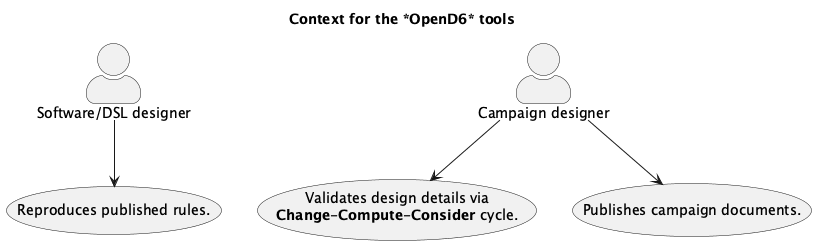
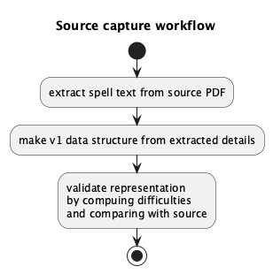
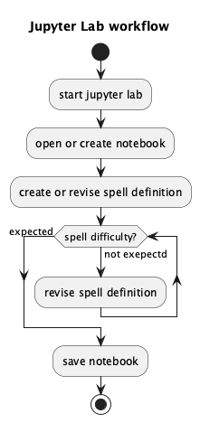

Architecture¶
These tools define Domain Specific Languages (DSLs) for some broad categories of complex TTRPG constructs, including magical spells (and miracles) as well as characters (and monsters.)
Consistent with the C4 Model, this document will look at Context, Containers, Components, and Code. This is a summary and overview of the common features and design approach.
The details of each DSL are in separate Code sections.
Context¶
We’ve got a number of use cases for two primary audiences, a Software/DSL designer, and a Campaign designer. The campaign designer’s work product will often be shared with players and game masters; this sharing isn’t really part of this application.
Here’s a summary of the context:

The Publishes campaign documents use case is implemented as processing the publication pipeline to create HTML, PDF, or EPUB documents.
The Validates design details use case includes a number of alternative versions of the Change-Compute-Consider cycle. This can include fine-tunning a spell’s difficulty. See fantasy.magic.adjusting_and_readjusting. It can also include adjusting the dice budget for template characters, generic characters, creatures, and monsters.
Additionally, this use case helps assure the rules and examples are internally consistent. Using software tools limits the author’s flexibility, helping to assure consistency.
Finally, Reproduces published rules is an essential test case to be sure this implementation is correct and consistent. This has a number of challenges. Some of the challenges are self-imposed. Specifically, because this project embraces the OpenD6 rules from a variety of sources and formats, the source documents need to be converted to a common RST format for (re-)publication as part of validating the extracted data.
The Change-Compute-Consider cycle validates spell design details; this is an essential step. The DSL assures the difficulty of a magical spell or invocation meets the needs of the overall rules or a specific campaign. The OpenD6 rules suggest that different religions will have distinct characteristics for invocations. This suggests some care to make sure the various religions have a balanced mix of strengths and weaknesses.
Creating unique campaign documents is a matter of authoring new documents using RST markup. This can then be converted to HTML or PDF or EPUB for publication.
Before we look at the DSL, we’ll take a short trip into conversions of the source material. This turned out to be a thorny problem.
Challenges¶
To help clarify the challenges, we’ll look at the overall workflow for capturing details from OpenD6 source documents.

There are a variety of challenges to working with the TTRPG rules in general and the OpenD6 rules in particular. These include:
Draft Documents¶
The OpenD6 Magic Guide was never formally published; the available source document is a draft. This means the spell difficulty computations are not completely trustworthy. Indeed, a few of them make precious little sense.
Further, the OCR processing is extremely rough. The document’s text content is – at best – an approximation of the original. Manual rework is required to create usable content from the sources.
For example, lOD+l is the OCR version of 10D+1. A great deal of patience is required to create something useful from some of the source documents.
Documents Designed for Human Consumption¶
Generally, all of the OpenD6 books are published for human consumption. The display of a spell is helpful for a GM or player to understand the difficulty and the effects. While this design helps players enjoy the game, it leads to ambiguities.
Creating automated tools is difficult when the baseline information is designed to present a lot of technical material in ways that aren’t overpoweringly dull. It helps the reader if the book introduces a subset of rules, followed by details, with examples scattered throughout. Ideally, the subset is not contradicted by the details. Further, there’s no guarantee that all examples fully match the detailed rules.
It’s difficult to be sure all of the cases stated in the rules are covered by a software implementation. The examples, generally, serve as good test cases. Except when the draft document seems to have errors.
Colorful Prose¶
A great deal of the text is colorful and exciting. It’s not always clear.
The most frustrating part is the poorly articulated effect. For an example, see the OpenD6 Fantasy Rules, the “Open Lock” cantrip.
It’s not at all clear what this effect really is. The rules assign difficulty of 18. But. How do we map this spell’s effect to other rules?
One interpretation is the spell does (temporary) physical damage to the lock. This would be Alteration, not Apportation.
Another interpretation is the spell creates a new skill in lockpicking. This doesn’t fit the description well, but, the effect is easy to define as a Skill Modifier of +4D lock picking. This has a difficulty of \(4 \times 3 \times 1.5\) which fits the difficulty perfectly. Except, this seems like it would be Alteration not Apportation.
To focus on Apportation magic, perhaps the lock’s internals are rearranged. Most apportation of an object weighing 1 kg or less is trivial. In this case, the spell difficulty would be under 5. This is nowhere near 18.
Maybe there’s some additional – unstated – difficulty doing some kind of “skilled apportation” of selected parts of the lock? There’s no provision for this in the rules.
This makes it clear that in some cases, the effects were not carefully mapped against other parts of the rules. Indeed, because some of the rules are a draft, the presence of errors seems likely.
The capture of source documents will create draft versions of Spells, Characters, and Creatures based on the version 1 definitions. How do we know these are properly captured? This leads to some consideration of the non-functional requirements.
Non-Functional Requirements¶
These non-functional requirements are part of the design and development process. They’re not part of the final DSL. We’ll use the FURPS model: Functionality, Usability, Reliability, Performance, and Supportability. Functionality is generally described by the C4 model, including Context, Containers, Components, and Code, covered elsewhere in this document.
Usability¶
As noted in the Context section, these tools are focused on desktop publication of TTRPG rules – world books, campaign books, scenario details, etc. These software tools are not for interactive play.
The tools need to work with a document production pipeline.
More importantly, the spell definitions are plain text files that can be edited and processed by a wide variety of tools. This means the essential content can be extracted from these tools for use in other tools.
We’ll return to the Usability question in the Notes on DSL Design section.
Reliability¶
Since the tools run on a desktop, any reliability, availability, and security questions are pushed to the desktop OS.
Performance¶
We don’t spend any time optimizing these tools for high performance. They’re run rarely.
Supportability¶
The most important question is this:
How can we be sure the DSL “works”?
We’re done defining the DSL when it can reproduce the published content. This means that we can have a suite of automated tests to create Spells, Characters, Creatures, etc. which have correct computed difficulties.
This test suite needs reflect lessons learned in the Challenges section. The published documents are difficult to parse and contain some editorial errors. Therefore, the DSL will not trivially reproduce the published results. It will reproduce those results which are clearly free of errors.
Containers¶
The tools will run on a desktop. The idea is to have Python module files with spell definitions (or character definitions.) The actors can then process these files to compute difficulty or dice budget values.
There are two general modes of operation.
The interactive Change-Compute-Consider cycle.
The final publication pipeline.
An interactive environment is required to permit the actors to fiddle around with spell aspects (or character attributes) to get the budget correct.
For interactive exploration, a tool like Jupyter Lab is ideal.
The spell can be created and tested within a lab notebook.
Later, an opend6_tools application can extract the notebook content to create the required Python module.
This will feed the document publicatiojn pipeline.
The document publication pipeline is best handled by a “static site generator” or similar tool. The Sphinx tool works well for this, since it can produce HTML, PDF, and EPUB outputs.
This leads to using these four applications on the user’s desktop:
Jupyter Lab to create and modify spell books.
A text editor to create and modify campaign documents.
The Sphinx tool to produce final, published documents. This can include HTML, EPUB, and PDF.
The make tool to coordinate the
opend6_tools.notebook_extractand Sphinx.
The components interact like this:
![@startuml
'https://plantuml.com/deployment-diagram
skinparam actorStyle awesome
title Container for the *OpenD6* tools
node desktop {
boundary Browser
boundary Terminal
component jupyter
component sphinx
boundary editor
folder notebooks {
file "spell notebook" as nb <<.ipynb>>
}
folder campaign {
folder source {
file "spell module" as py <<.py>>
file "other docs" <<.rst>>
}
folder build {
file "campaign book" as book <<.html>>
}
}
component notebook_extract
notebook_extract --> nb : "consumes"
notebook_extract --> py : "creates"
jupyter --> nb : "creates"
Browser --> jupyter
sphinx --> py : "reads"
sphinx --> book : "writes"
component make
make --> sphinx : "runs"
make --> notebook_extract : "runs"
Terminal --> make
component magic2
component character
nb ..> magic2
nb ..> character
py ..> magic2
py ..> character
editor ---> "other docs" : "creates"
}
actor "campaign designer" as gm
gm --> Browser : "design"
gm --> Terminal : "publish"
gm --> editor
cloud "players and GM's" as players
book ----> players
@enduml](_images/plantuml-0debff59d91159d583178242fe1eac6d593ade28.png)
For reference, here’s a depiction of using Jupyter Lab to design and develop spell definitions. The workflow looks like this:

This permits creating any number of notebooks with any mixture of ideas. Not all notebooks needs to be part of the final document production.
Components¶
The opend6_tools components have two purposes:
Define DSLs for Spells, Characters, etc. These will support the “Validates design details via Change-Compute-Consider cycle” part of the use case. They are tested by the “Reproduces published rules” use case.
Applications to support publication by extracting RST-format details from the DSL. This supports the “Publish campaign documents” use case.
The DSL is used in a Python module. The module can be created manually or extracted from a notebook.
Generally, spell and character definitions depend on these modules in several distinct ways.
The definition DSL depends on the
opend6_tools.magic2oropend6_tools.charactermodule.The extraction of a spell module from a Jupter Notebook is performed by the
opend6_tools.notebook_extract. applicationThe conversion of a spell module to RST is an internal feature of the spell module.
These relationships are shown below.
![@startuml
'https://plantuml.com/component-diagram
title Component Relationships
folder opend6_tools {
component magic2 <<lib>>
component notebook_extract <<app>>
}
folder notebooks {
file "spells notebook" as nb <<.ipynb>>
nb ..> magic2 : "imports"
}
folder docs {
component "spells module" as py <<app>>
py ..> magic2 : "imports"
artifact "spells source" as rst <<RST>>
py -> rst : "creates"
}
folder build {
artifact "target document" as doc <<HTML>>
}
nb <-- notebook_extract : "reads"
notebook_extract ---> py : "writes"
component sphinx
rst --> sphinx : "reads"
sphinx --> doc : "writes"
@enduml](_images/plantuml-62f4156d51092a7fa67ac8096b57392950145731.png)
The publication operations are controlled by Makefiles. Generally, there will be three Makefiles.
The overall document Makefile, generated by
sphinx-quickstartwith two modifications.%: Makefile %(MAKE) -C spells %(MAKE) -C characters @$(SPHINXBUILD) -M $@ "$(SOURCEDIR)" "$(BUILDDIR)" $(SPHINXOPTS) $(O)
A
spells/Makefileto emit spells and invocations.# Spells Makefile .phony: spells vpath %.ipynb ../../notebooks # Create a Python Spell module from a Jupyter Notebook with the same name. %.py : %.ipynb python -m opend6_tools.notebook_extract spells $< > $@ # Create an RST text file from a Python Spell module with the same name. %.txt : %.py python $< display > $@ spells : spell_1.txt spell_2.txt, etc.
The definition of the
spellstarget needs to be changed to reflect the files that must be converted for the final documentation.A
characters/Makefileto emit characters and creatures.# Characters and Creatures Makefile .phony: characters vpath %.ipynb ../../notebooks # Create a Python Character or Creature module from a Jupyter Notebook with the same name. %.py : %.ipynb python -m opend6_tools.notebook_extract characters $< > $@ # Create an RST text file from a Python Character or Creature module with the same name. %.txt : %.py python $< display --format SHORT > $@ characters : characters.txt creatures.txt
Note that there are a number of character formats. The
SHORTformat is used for most descriptions of characters and creatures. There are however, some longer formats available.LONGVery detailed.LONG2Less detailed, often used for non-human races.SHORTThe kind of summary shown in the Adventure Tips chapter.TABLEA full character sheet using HTML table constructs.LITERALA full character sheet using RST literal constructs.
The need for some
LONG2characters for the non-human races, andTABLEfor the character templates will make the charactersMakefilesomewhat more complicated.
The overall Publication idea is called “recursive make”.
The top-level Makefile invokes two subsidiary Makefiles in distinct sub-directories.
This is needed to assure the notebook extract processing uses appropriate parameters.
Code¶
The implementation code is covered in documents for each component: